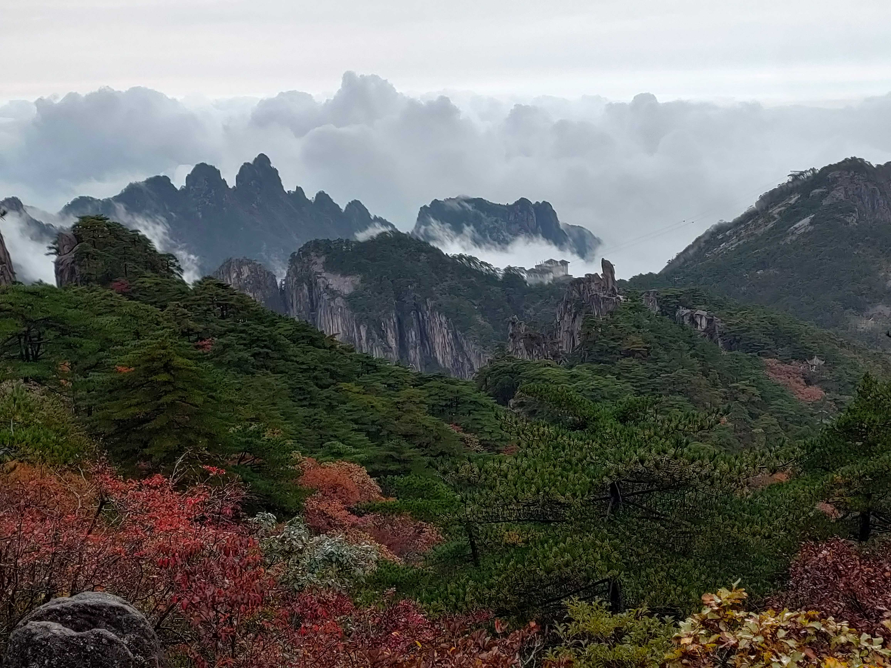
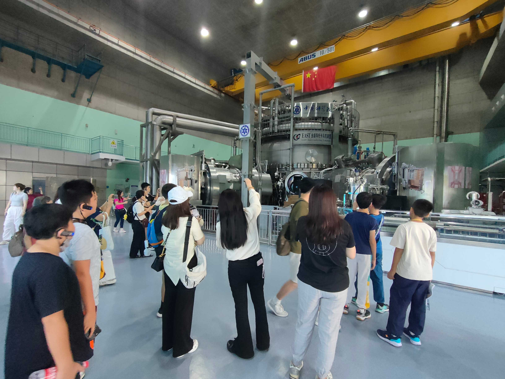
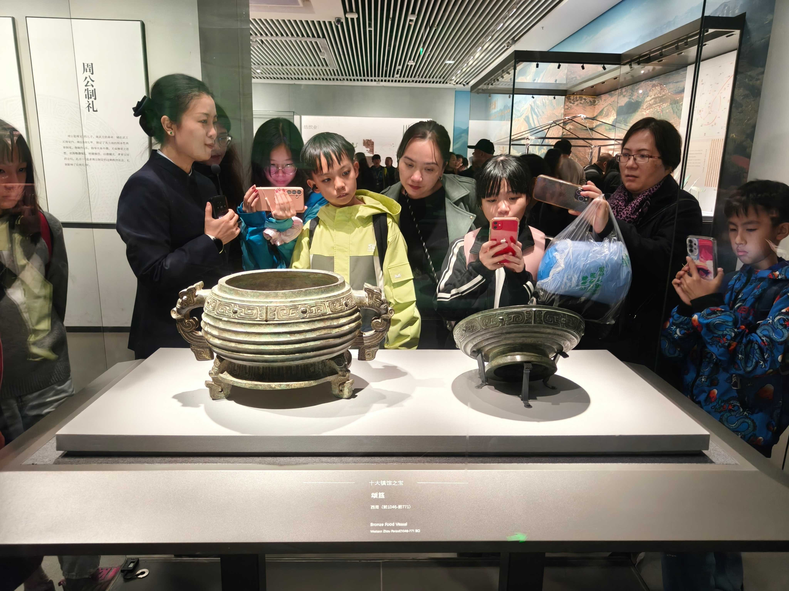
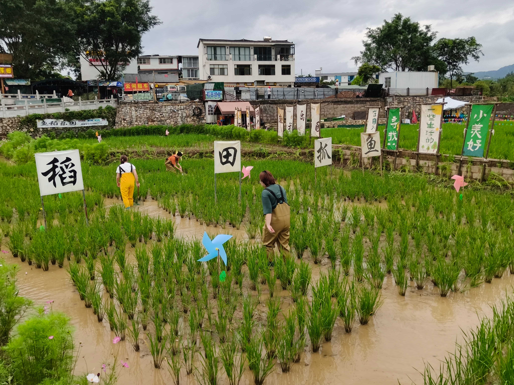

皖南

皖南以其自然之美和丰富文化遗产闻名。
黄山以其独特的花岗岩峰峦和松林闻名世界，是联合国教科文组织世界遗产。浮云缭绕，使这里宛如仙境。
皖南是传统文人最推崇的“文房四宝”的重要产地。在游学中，人们可以近距离了解传统制作工艺，并亲手参与其中。
徽文化是中国最悠久、也最全面的地域文化之一。由于山地阻隔，徽州人形成了独特的生活方式与文化传统，延续了近千年，并在各个方面都相当成熟。其中的徽菜，是中国八大菜系之一。
了解更多江淮地区

这次游学聚焦江淮地区的两座主要城市。
南京是一座承载着丰富历史文化的城市。它曾是多朝古都，也是近代中国的重要经济文化中心，在城中人们可以获得大量的历史与文化体验。
虽然合肥历史更长，但在过去并不像南京那样举足轻重。然而，近年来它迅速成为前沿科技与创新的中心。从聚变反应堆到量子计算器，从半导体到电动车，再从人工智能到生物技术，合肥站在中国科技进步的前沿地带。
这两座城市结合在一起，提供了一个观察中国过去与未来的独特视角。
了解更多济南黄河

济南以泉水闻名，被称为“泉城”。这座城市拥有72处著名泉眼，其中包括标志性的趵突泉。雨季时，泉水喷涌，景象十分壮观。泉水汇入明水古镇的池塘与溪流，形成北方独特的水乡风貌。
济南是山东省省会。历史上，山东是儒家思想的发源地，也是中华文化的重要源头之一。在省博物馆中，参观者可以探索齐鲁古国留下的文物与遗迹，更好地理解中华文化的萌芽。
济南也是黄河生态系统的窗口，人们可以直接体验中华文明母亲河的活力。
了解更多贵州

贵州位于中国西南部，是一处喀斯特地貌、桥梁与民族文化的三重博物馆。传统上，它以独特而全面的喀斯特地貌和多样民族文化闻名；如今，它也拥有数以万计的桥梁。
几乎所有喀斯特地貌形式都能在贵州找到，包括石灰岩洞穴、天坑、地下河、瀑布群、峡谷和峰林。马岭河峡谷以其陡峭悬崖和从悬崖上流出的地下河与溪流形成的众多瀑布而闻名，被誉为“地球上最美的峡谷”。
贵州曾是一个偏远山区省份，但如今通过无数桥梁与外界相连。它拥有世界上最高的10座桥梁中的一半，其中花江峡谷大桥更是世界最高桥。贵州也是中国民族数量最多的省份之一。
了解更多